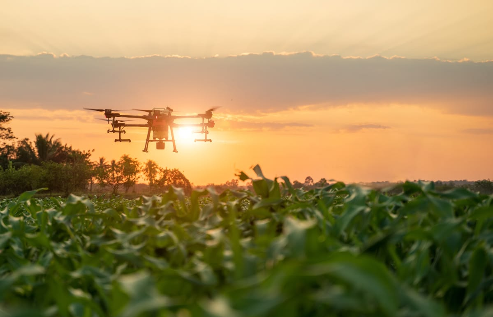
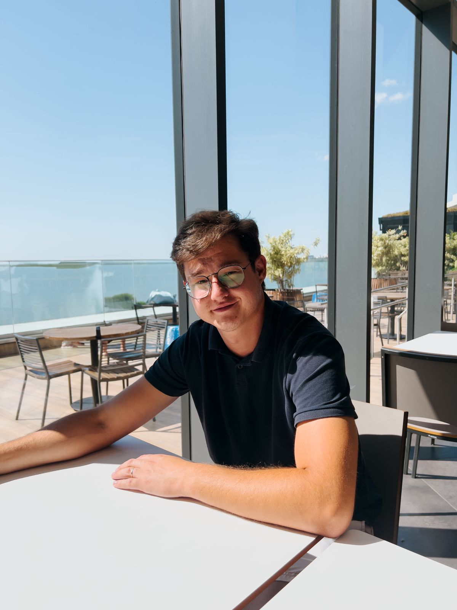

Sistema de Manutenção de Drones
Controle completo do processo de manutenção, desde o recebimento até a entrega.
Profissional com experiência em logística, operações e tecnologia, atuando na área de tecnologia agrícola. Tenho conhecimento prático com drones agrícolas, manutenção de equipamentos e organização de processos.

Minha trajetória profissional começou na área de logística e e-commerce, onde desenvolvi experiência com organização de processos, controle de estoque, sistemas e rotinas operacionais.
Atualmente atuo na área de tecnologia agrícola, trabalhando com preparação, organização e manutenção de drones e seus equipamentos.
Meu objetivo é continuar evoluindo na área, unindo tecnologia, processos e experiência prática para contribuir com soluções cada vez mais eficientes.

Controle completo do processo de manutenção, desde o recebimento até a entrega.
Gestão de estoque de peças com alertas de mínimo, entradas e saídas.
Checklist digital para inspeção e manutenção de drones agrícolas.
Controle de envio, recebimento e rastreamento de drones e acessórios.
Se você tem alguma oportunidade, projeto ou ideia, seria um prazer conversar.